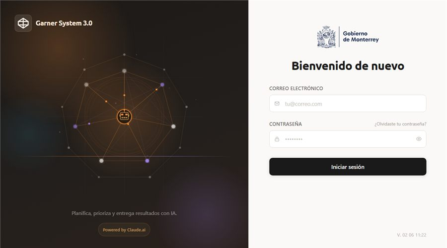

PROYECTO / 06
Garner System 3.0
Nueva versión del sistema para planificación, priorización y entrega de resultados con IA. Integra seguimiento operativo, tableros de control y flujos de trabajo para gobiernos municipales.
ReactIADashboardsGobierno Digital
